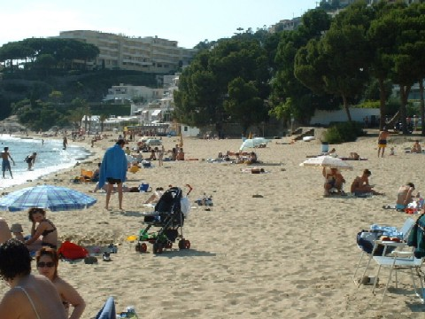

|  |
Roses geniet een unieke ligging tussen 2 totaal verschillende kusten en is daarom een ideale bestemming voor een geslaagde vakantie. De kust bij Roses is een voormalig militair domein en is aldus van intensieve bebouwing bespaart gebleven.Het algemene strand van Roses is verdeeld in verschillende sectoren: La Punta, Nova beach, Rastrell beach en Salatar beach, elk apart van elkaar gescheiden dmv een uitwatering. De totale lengte bedraagt 2,340 m en loopt vanaf de vissershaven tot aan het strand van Santa Margarida. Het is een breed strand met fijn zand en niet zo heel diep water, ideaal voor families met kleine kinderen en het uitoefenen van diverse watersporten.
Sinds 1996 word deze kust gewaardeerd om de kwaliteit van het schone strand en water met een Europese blauwe vlag alsmede voor de service zoals toezicht door lifeguards, douches, afvalbakken, toilets, rode kruis, telefoon, zonnebedden, parasols, verhuur direct op het strand van waterfietsen en/of kayak, volleyball net, kinder speeltoestellen, windsurf school en niet te vergeten parkeerplaats mogelijkheid direct aan het strand!
Kleine en intieme strandjes zijn voldoende aanwezig zoals Calis (50 m), La Pelosa (90 m), Cala Calitjas (110 m), Playa Bonifaci (100 m), Canyelles Petites (370 m), LÁlmadrava 450 m lang.
De kust bied ook de mogelijkheid interessante duiken te maken in het natuurpark tussen Punta Falconera en Punta de la Figuera. Zowel voor beginnelingen als voor ervaren duikers is ieder duik indrukwekkend!